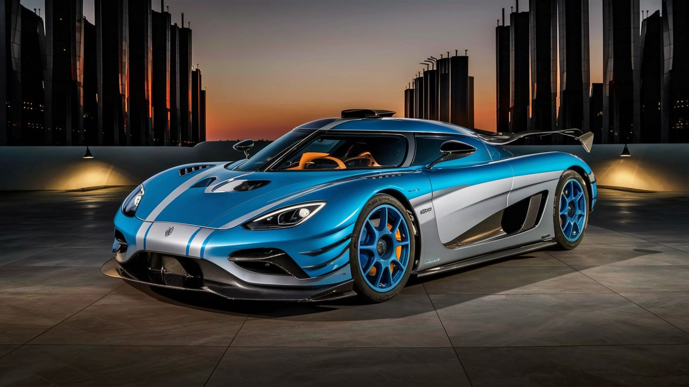
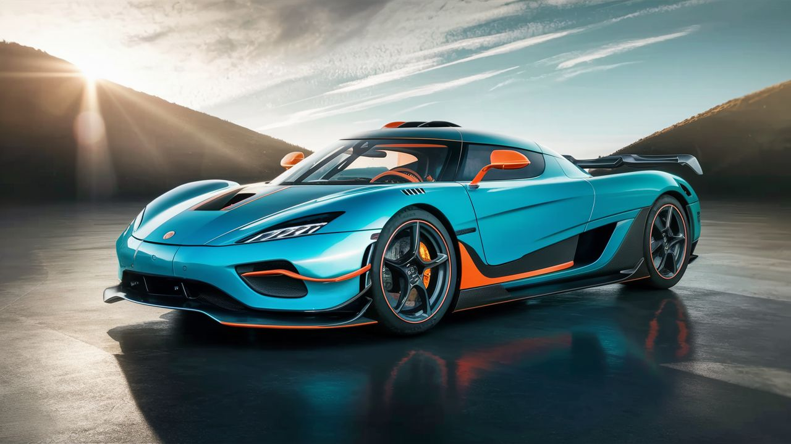
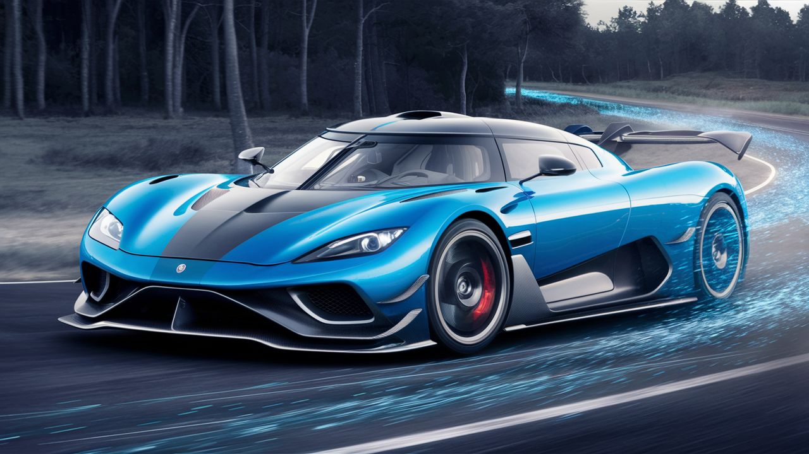

Jaguar
Koenigsegg Automotive AB es un fabricante sueco de automóviles superdeportivos exclusivos de lujo fundado en 1994, con sede en Ängelholm. La marca se ha destacado por su enfoque en la innovación y la tecnología de vanguardia en la fabricación de vehículos de altas prestaciones. Con modelos emblemáticos como el Koenigsegg Agera, la empresa ha logrado reconocimiento mundial por su diseño distintivo y su rendimiento excepcional . Koenigsegg se ha mantenido a la vanguardia en el panorama competitivo de la movilidad eléctrica, ofreciendo componentes innovadores a una clientela visionaria con el objetivo de reducir las emisiones de CO2. Cada detalle de un coche Koenigsegg se mide contra el objetivo continuo de mejorar el rendimiento del vehículo, reflejando el compromiso de la marca con la excelencia y la calidad . La marca ha logrado hitos significativos en la industria automotriz, como el récord de velocidad del Koenigsegg CCR en Estados Unidos y el lanzamiento de modelos revolucionarios como el Koenigsegg Jesko. Con una historia marcada por la pasión por los automóviles deportivos, Koenigsegg continúa siendo un referente en el mundo de los superdeportivos exclusivos
Modelos destacados
Koenigsegg Jesko

Motor: V8 de 5.0 litros Twin-Turbo Potencia: 1600 caballos de fuerza Aceleración (0-100 km/h): Menos de 2.5 segundos Características: Hypercar de altas prestaciones, tecnología innovadora, diseño aerodinámico. Precio: Desde aproximadamente $3 millones USD.
Koenigsegg Regera
Motor: V8 de 5.0 litros Twin-Turbo con motores eléctricos Potencia: 1500 caballos de fuerza combinados Aceleración (0-100 km/h): Menos de 2.8 segundos Características: Hypercar híbrido, lujo y rendimiento excepcionales. Precio: Desde aproximadamente $2.3 millones USD.
Koenigsegg Gemera
Motor: V8 de 2.0 litros Twin-Turbo con motores eléctricos Potencia: 1700 caballos de fuerza combinados Aceleración (0-100 km/h): Menos de 2 segundos Características: Hypercar de cuatro plazas, tecnología revolucionaria, diseño innovador. Precio: Desde aproximadamente $1.7 millones USD.